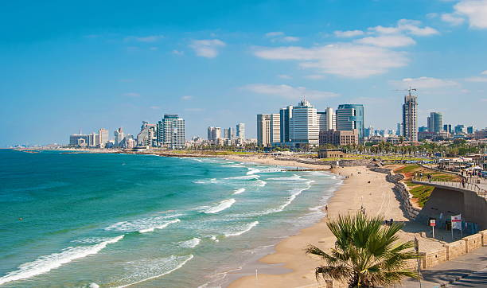

Tel Aviv
Fun Facts About Tel Aviv
Tel Aviv is Israel's largest metropolitan area and a major center for technology and innovation. Founded in 1909, it is one of the youngest major cities in the world with a dynamic and forward-thinking culture.
- Tel Aviv is Israel's largest metropolitan area and a major center for technology and innovation
- The city was founded in 1909 and is one of the youngest major cities in the world
- Tel Aviv has beautiful Mediterranean beaches and a vibrant nightlife
- The city is known as the "Silicon Valley of the Middle East" due to its thriving tech industry
Places to Visit in Tel Aviv
Tel Aviv offers a perfect blend of modern attractions, cultural experiences, and natural beauty. Here are some top destinations to explore:
- Tel Aviv Beach: A popular sandy beach perfect for swimming, sunbathing, and water sports along the Mediterranean coast
- Jaffa Old City: An ancient port city with narrow streets, art galleries, and historic buildings offering a glimpse into the past
- Tel Aviv Museum of Art: Features modern and contemporary art from around the world in a world-class facility
- Carmel Market: A bustling outdoor market with food, clothing, and souvenirs reflecting local culture

Tel Aviv is a city that never stops moving. With its combination of beautiful beaches, cutting-edge technology, vibrant culture, and welcoming atmosphere, Tel Aviv is a must-visit destination for anyone exploring Israel.